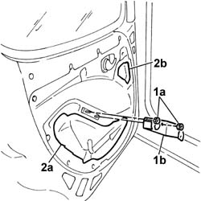

7005A05 front side door water guard protection r r or arrange
- Path
- Procedures > 70 FITTINGS > 7005 PASSENGER COMPARTMENT FRONT SIDE DOORS > 7005A front side door assembly > 7005A05 front side door water guard protection r r or arrange
- Kind
- repair procedure (removal / refitting; the operation number is the code)
- Applies to
- all engines; all production periods
- Interactive page
- https://sloeber94.github.io/elrnDB-fDbl/en/#/2584983
Applies to: engines: 1.2 8v, 1.6 16v, 1.3 JTD 16V, 1.9 JTD 8V, 1.9 DIESEL; all production periods
 Removing
Removing
 Refitting
RefittingOp. 7005D38 FRONT SIDE DOOR MANUAL WINDOW MECHANISM HANDLE / RING NUT - R.R.
Op. 7005E10 FRONT SIDE DOOR INTERIOR PANEL - R.R.
Op. 7005A04 FRONT SIDE DOOR WATER GUARD PROTECTION - R.R. OR POSITION WITH DOOR PANEL REMOVED
Applies to: engines: 1.2 8v, 1.6 16v, 1.3 JTD 16V, 1.9 JTD 8V, 1.9 DIESEL; all production periods
Refitting
RemovingOp. 7005A04 FRONT SIDE DOOR WATER GUARD PROTECTION - R.R. OR POSITION WITH DOOR PANEL REMOVED
Op. 7005E10 FRONT SIDE DOOR INTERIOR PANEL - R.R.
Op. 7005D38 FRONT SIDE DOOR MANUAL WINDOW MECHANISM HANDLE / RING NUT - R.R.
Applies to: engines: 1.2 8v, 1.6 16v, 1.3 JTD 16V, 1.9 JTD 8V, 1.9 DIESEL; all production periods; only with equipment: Electric front windows
Removing
RefittingDisconnect the battery negative terminal.
Applies to: engines: 1.2 8v, 1.6 16v, 1.3 JTD 16V, 1.9 JTD 8V, 1.9 DIESEL; all production periods; only with equipment: Electric front windows and Cargo trim level
Op. 7005E10 FRONT SIDE DOOR INTERIOR PANEL - R.R.
Op. 7005A04 FRONT SIDE DOOR WATER GUARD PROTECTION - R.R. OR POSITION WITH DOOR PANEL REMOVED
Applies to: engines: 1.2 8v, 1.6 16v, 1.3 JTD 16V, 1.9 JTD 8V, 1.9 DIESEL; all production periods; only with equipment: Electric front windows and Doblò trim level
Op. 7005E18 FRONT SIDE DOOR ARMREST - R.R.
Op. 7005E38 FRONT SIDE DOOR INTERIOR HANDLE- R.R.
Op. 7005E10 FRONT SIDE DOOR INTERIOR PANEL - R.R.
Op. 7005E30 ODDMENTS POCKET ON FRONT SIDE DOOR - R.R.
1. Undo the nuts (1a) and remove the handle mounting bracket (1b).
2. Remove the central (2a) and top (2b) seal.

Applies to: engines: 1.2 8v, 1.6 16v, 1.3 JTD 16V, 1.9 JTD 8V, 1.9 DIESEL; all production periods; only with equipment: Electric front windows and Cargo trim level
Refitting
RemovingOp. 7005A04 FRONT SIDE DOOR WATER GUARD PROTECTION - R.R. OR POSITION WITH DOOR PANEL REMOVED
Applies to: engines: 1.2 8v, 1.6 16v, 1.3 JTD 16V, 1.9 JTD 8V, 1.9 DIESEL; all production periods; only with equipment: Electric front windows and Doblò trim level
Check that the new seals are intact and not torn.
Fit the new central seal, making sure that the adhesive bead sticks to the door frame.
Repeat the operation for the top seal.
Fit the handle mounting bracket and secure it with the nuts.
Op. 7005E30 ODDMENTS POCKET ON FRONT SIDE DOOR - R.R.
Op. 7005E10 FRONT SIDE DOOR INTERIOR PANEL - R.R.
Applies to: engines: 1.2 8v, 1.6 16v, 1.3 JTD 16V, 1.9 JTD 8V, 1.9 DIESEL; all production periods; only with equipment: Electric front windows
Connect the battery negative terminal.
Applies to: engines: 1.4 8v, 1.6 16v, 1.3 JTD 16V, 1.9 JTD 8V; production: da 12/03; only with equipment: MY 2005
Removing
Refitting- Turn the ignition key to the OFF position.
- Lift the bonnet
- Disconnect the negative battery terminal.
Description | Connector | |
|---|---|---|
BATTERY |
Op. 7005R40 REAR VIEW MIRROR-S AND DOOR MIRROR-S POSITIONING SWITCH UNIT - R.R.
Op. 7005C44 TRIM FOR INTERIOR FRONT SIDE DOOR OPENING HANDLE (ONE), LEFT OR RIGHT - R.R.
Op. 7005E10 FRONT SIDE DOOR INTERIOR PANEL - R.R.
Op. 7005A04 FRONT SIDE DOOR WATER GUARD PROTECTION - R.R. OR POSITION WITH DOOR PANEL REMOVED
Applies to: engines: 1.4 8v, 1.6 16v, 1.3 JTD 16V, 1.9 JTD 8V; production: da 12/03; only with equipment: MY 2005
Refitting
RemovingOp. 7005A04 FRONT SIDE DOOR WATER GUARD PROTECTION - R.R. OR POSITION WITH DOOR PANEL REMOVED
Op. 7005E10 FRONT SIDE DOOR INTERIOR PANEL - R.R.
Op. 7005C44 TRIM FOR INTERIOR FRONT SIDE DOOR OPENING HANDLE (ONE), LEFT OR RIGHT - R.R.
Op. 7005R40 REAR VIEW MIRROR-S AND DOOR MIRROR-S POSITIONING SWITCH UNIT - R.R.
- Connect the negative battery terminal.
Description | Connector | |
|---|---|---|
BATTERY |
Topics linked from this page (9)
- 7005A04 front side door water guard protection - r r or replace with door panel removed
- 7005C44 interior handle panel - r r
- 7005D38 front side door manual window mechanism handle ring-nut - r r
- 7005E10 front side door inner panel - r r for replacement
- 7005E18 front side door arm rest r r
- 7005E30 object pouch on one front side door r r
- 7005E38 front side door interior handle-r r
- 7005R40 rear view mirror-s and door mirror-s positioning switch unit - r r
- A001 BATTERY